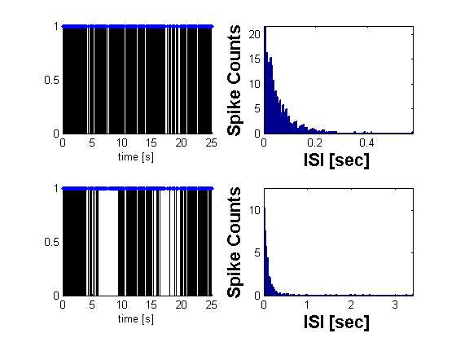

Simulate PP via thinning
Given a conditional intensity function, we generate a point process consistent with this CIF.
Contents
Basic Example
close all; delta = 0.001; Tmax = 100; time = 0:delta:Tmax; f=.1; lambdaData = 10*sin(2*pi*f*time)+10; %lambda >=0 lambda = Covariate(time,lambdaData, '\Lambda(t)','time','s','Hz',{'\lambda_{1}'},{{' ''b'', ''LineWidth'' ,2'}}); lambdaBound = max(lambda); N=lambdaBound*(1.5*Tmax); %Expected number of arrivals in interval 1.5*Tmax u = rand(1,N); %N samples uniform(0,1) w = -log(u)./(lambdaBound); %N samples exponential rate lambdaBound (ISIs) tSpikes = cumsum(w); %Spiketimes; tSpikes = tSpikes(tSpikes<=Tmax);%Spiketimes within Tmax % Thinning lambdaRatio = lambda.getValueAt(tSpikes)./lambdaBound; % lambdaRatio <=1 % draw uniform random number in 0,1 u2 = rand(length(lambdaRatio),1); % keep spike if lambda ratio is greater than random number tSpikesThin = tSpikes(lambdaRatio>=u2);
Compare Constant rate process vs. thinned process
figure(1); n1 = nspikeTrain(tSpikes); n2 = nspikeTrain(tSpikesThin); subplot(2,2,1); n1.plot; plot(tSpikes,ones(size(tSpikes)),'.'); v=axis; axis([0 Tmax/4 v(3) v(4)]); subplot(2,2,2); n1.plotISIHistogram; subplot(2,2,3); n2.plot; plot(tSpikes,ones(size(tSpikes)),'.'); v=axis; axis([0 Tmax/4 v(3) v(4)]); subplot(2,2,4); n2.plotISIHistogram; figure(2); n2.plot; scaledProb = lambda*(1./lambdaBound); scaledProb.plot; v=axis; axis([0 Tmax/4 v(3) v(4)]);

Simulate multiple realizations of a point process via thinning
The CIF class can generated realizations of a point process given a conditional intensity function (defined as a Covariate or SignalObj)
numRealizations = 20; spikeColl = CIF.simulateCIFByThinningFromLambda(lambda,numRealizations); figure(3); spikeColl.plot; lambda.plot; v=axis; axis([0 Tmax/4 v(3) v(4)]);